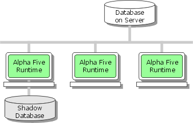
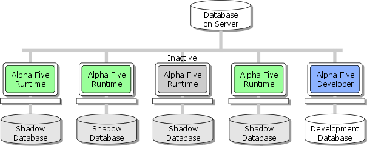

Multi-User Architectures
In an environment where the Alpha Anywhere application is fully developed, the simplest multi-user architecture has multiple client PCs, each with a Runtime license, and a PC acting as a server. Depending on performance considerations, the server PC could be one of the client PCs.
A "N" user license defines the maximum number of concurrent users. If you purchase a 3 user Runtime license, you may have a maximum of 3 concurrent users. However, the Runtime software may be installed on more than 3 (for example, 5) client PCs. Only 3 of those 5 users may be active at any one time.

A 3 User Runtime Configuration with a Shared Database and No Development Capabilities
The following illustration shows a 3 user configuration combined with a developer (Full license) workstation. Although the Runtime software is installed on 4 PCs, only 3 of them may be active at one time.

A 3 User Runtime Configuration and a 1 User Development Workstation
Shadow Database
A shadow database caches certain application components on the local client PC to improve performance. Any number of client PCs may have their own shadow database. The data remains on the server.
See Also
Preparing a Runtime Installation to use a Shadow Database